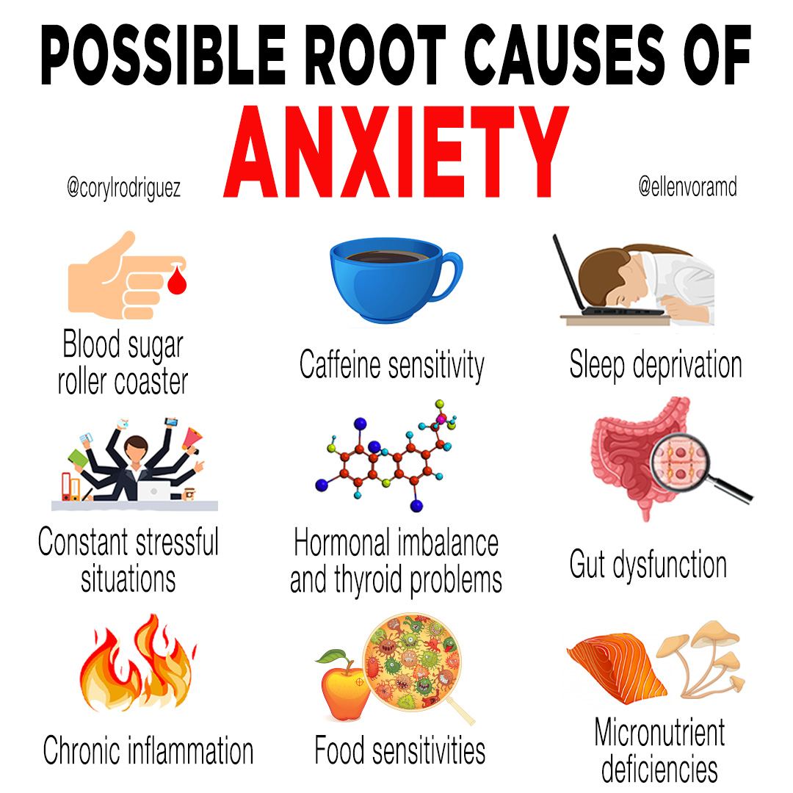
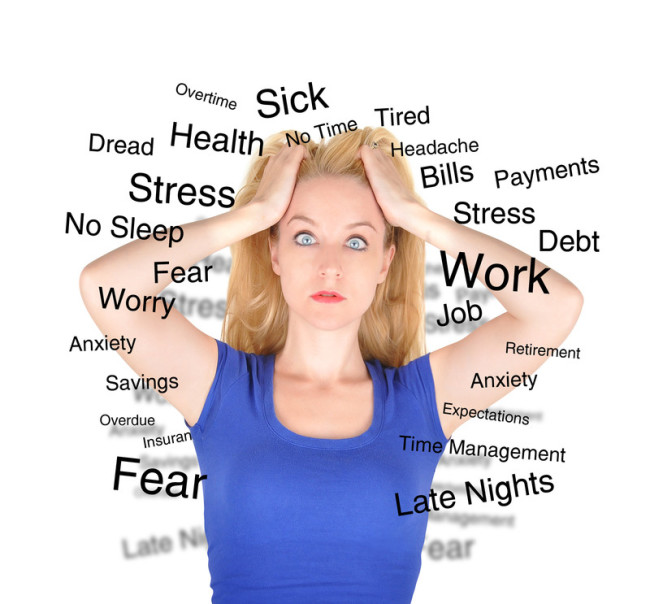
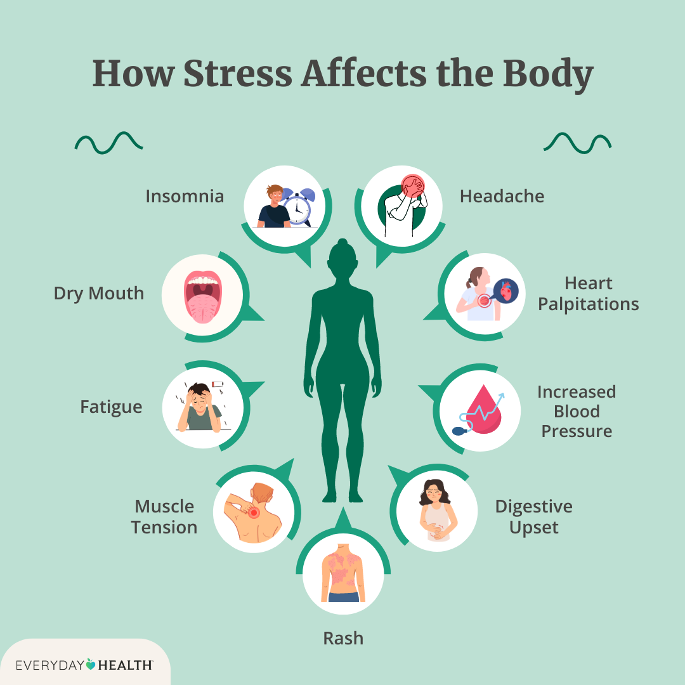
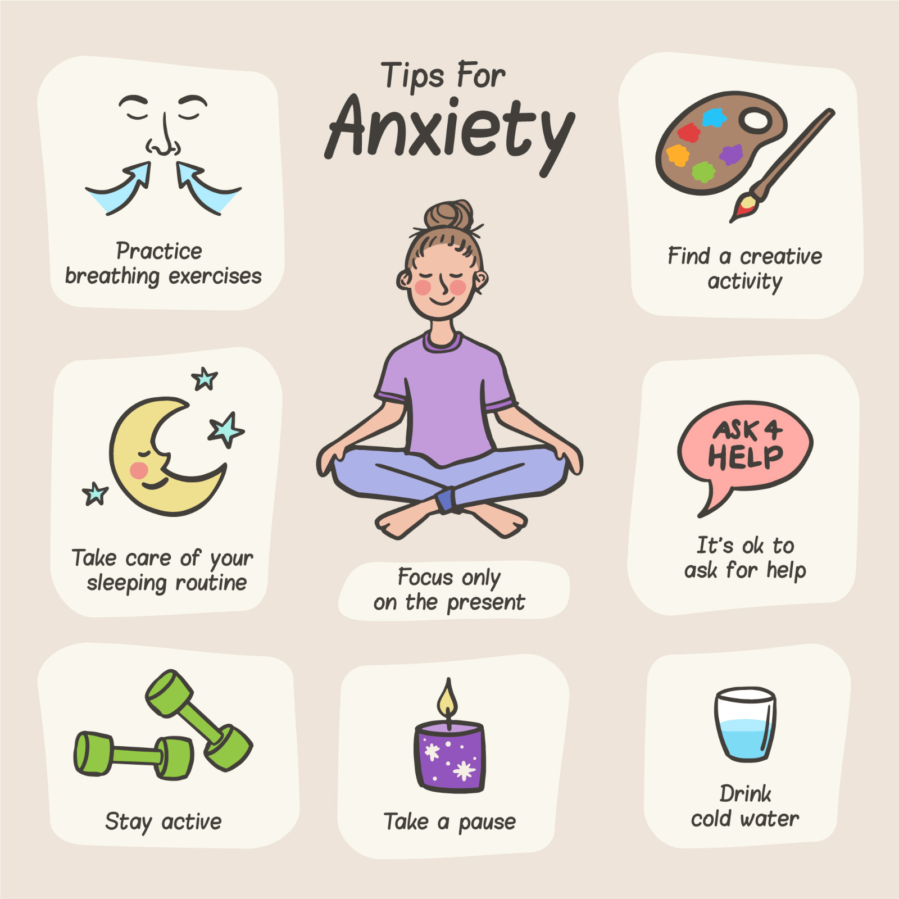

Understanding Stress and Anxiety

Causes
- Workload – Long hours and high demands.
- Poor Sleep – Affects brain function.
- Unhealthy Lifestyle – Irregular diet and caffeine.
- Overthinking – Constant worry and fear.
- Lack of Emotional Support – Isolation or trauma.

Symptoms
- Irritability – Quick to anger or frustration.
- Sleep Problems – Difficulty falling or staying asleep.
- Fatigue – Constant tiredness or burnout.
- Restlessness – Inability to relax.
- Palpitations – Fast or irregular heartbeat.

Effects
- Heart Strain – Increased risk of heart disease.
- Immune Suppression – More prone to infections.
- Digestive Issues – Like acidity or IBS.
- Mental Disorders – Leads to depression or panic attacks.
- Poor Quality of Life – Affects relationships and work.

Prevention & Cure (Ayurveda)
- Herbal Support – Use Brahmi, Ashwagandha, and Jatamansi.
- Satvik Diet – Light, nourishing meals with calming herbs.
- Lifestyle & Yoga – Include pranayama and mindfulness practices.
- Detox Therapies – Shirodhara and Abhyanga calm the nervous system.
- Mind-Body Balance – Daily meditation, journaling, and self-care.